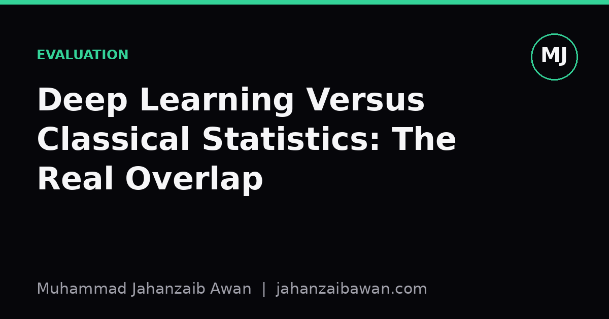

Deep Learning Versus Classical Statistics: The Real Overlap
Both fields fit functions to data and worry about generalisation; the disagreement is mostly about which assumptions you are willing to state out loud.

Why this argument keeps resurfacing
I have sat in enough seminars to notice a recurring pattern: someone frames deep learning as a wholly new science, detached from the statistical tradition that preceded it, and someone else insists it is just curve fitting with extra steps. Both framings are wrong in useful ways, because they obscure the fact that deep learning and classical statistics are answering the same underlying question with different tools and different comfort levels around assumptions.
The question, stripped of jargon, is this: given a finite sample of data, how do we build a function that performs well on data it has not seen? Classical statistics answers this by being explicit about the data-generating process, stating assumptions about distributions, and deriving guarantees from those assumptions. Deep learning tends to answer it empirically, by throwing flexible models at large datasets and checking performance on held-out splits. The tools differ, but the underlying concern, generalisation beyond the training sample, is identical.
This matters practically because people often import intuitions from one tradition into the other without checking whether they transfer. A statistician trained to distrust models with more parameters than data points will be baffled by a neural network with a hundred million parameters trained on fifty thousand examples that still generalises reasonably well. A deep learning practitioner who has never thought about confidence intervals may report a single accuracy number as if it were exact, when it carries real sampling uncertainty. Understanding where the overlap genuinely lies helps both camps borrow the right habits from each other.
The bias-variance tradeoff never left the building
The clearest overlap is the bias-variance tradeoff, which is a classical statistical idea that remains fully operative in deep learning, even though it is rarely named explicitly in that context. Bias is the error from a model being too simple to capture the true pattern; variance is the error from a model being so sensitive to the particular training sample that it fails to generalise. Classical regression courses teach this with polynomial fitting: a straight line underfits a curved relationship, a degree-twenty polynomial memorises the noise in your fifteen data points and swings wildly between them.
Deep networks experience the same tradeoff, just with different knobs. Suppose you are predicting house prices from twelve features using a dataset of two thousand rows. A linear regression with twelve coefficients has high bias if the true relationship is nonlinear, but low variance, since twelve parameters cannot easily memorise two thousand rows of noise. A three-layer neural network with two hundred thousand parameters has far lower bias, since it can represent complex nonlinear interactions, but without regularisation it risks high variance, fitting quirks specific to your two thousand rows rather than the general pattern.
What deep learning changed is not the tradeoff itself but the mechanism for controlling variance. Instead of restricting the number of parameters, practitioners use techniques like dropout, weight decay, early stopping, and data augmentation, all of which are forms of regularisation that classical statisticians would recognise immediately, since ridge regression and lasso regression are doing conceptually the same job by shrinking coefficients toward zero. The phenomenon where very large networks sometimes generalise well despite having far more parameters than training examples, often described under the banner of double descent, is a genuinely interesting departure from the classical picture, but it is a refinement of the bias-variance story, not a replacement for it.

Where the overlap breaks down and why it matters
The honest disagreement is about inference versus prediction. Classical statistics was built largely to answer questions like: does this drug have an effect, and how confident are we in that estimate? That requires interpretable parameters, standard errors, and assumptions you can write down and defend, such as independence of observations or normally distributed residuals. Deep learning was built largely to answer: can this system correctly transcribe speech or classify an image? Interpretability of individual weights is not the goal, and nobody is reporting a confidence interval on a convolutional filter.
This distinction has real consequences for evaluation. If you train a classifier and report ninety-four percent accuracy on a held-out test set of one thousand examples, a classically trained eye immediately asks about the uncertainty around that number. With one thousand independent test examples, a rough standard error on a proportion near ninety-four percent is around three quarters of one percentage point, which means a competing model scoring ninety-five percent on the same test set might not be meaningfully better at all. Deep learning papers sometimes skip this step entirely, treating a single point estimate as a conclusion rather than a sample from a noisy process, and that is a place where classical statistical habits genuinely improve practice.
Conversely, classical statistics has less to say about representation learning, the idea that a model can learn useful features directly from raw pixels or raw text rather than requiring a human to engineer them first. This is a real methodological contribution from the deep learning tradition, and pretending it is just statistics with a new name undersells how much it changed what is practically achievable. The overlap is genuine, but it is not total, and the honest answer is that the two fields share a mathematical core while diverging sharply on what counts as a satisfying answer.
A practical takeaway
If you work with either tradition, the useful discipline is to keep asking both sets of questions regardless of which toolkit you are using. When you fit a neural network, ask the classical questions: what is my effective sample size, how much variance is in my evaluation metric, would a simpler model with fewer parameters do almost as well, and have I checked for leakage between my training and test splits that would make my generalisation estimate optimistic. When you fit a classical model, ask the deep learning question: am I confident my chosen functional form and feature set are flexible enough to capture the real pattern, or have I imposed bias through convenience rather than genuine belief about the data-generating process.
The overlap genuinely lies in the shared mathematics of generalisation, the bias-variance tradeoff, and the discipline of honest evaluation on unseen data. The divergence lies in goals, assumptions, and what each field is willing to leave unexplained in exchange for predictive performance. Knowing which questions belong to which tradition, and asking both anyway, is what separates careful practice from fashion.